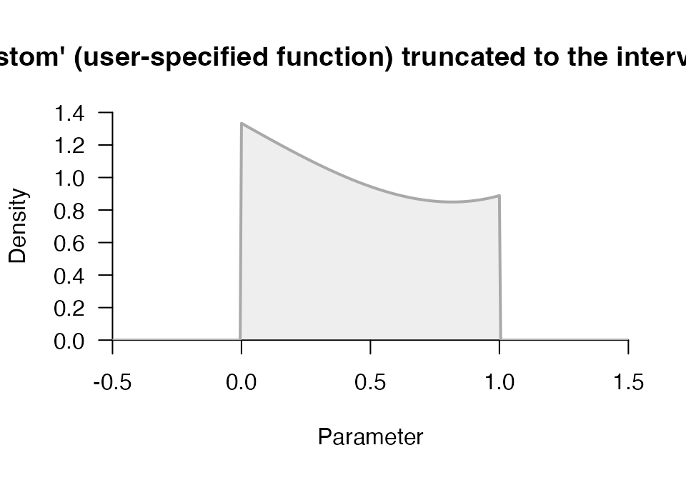
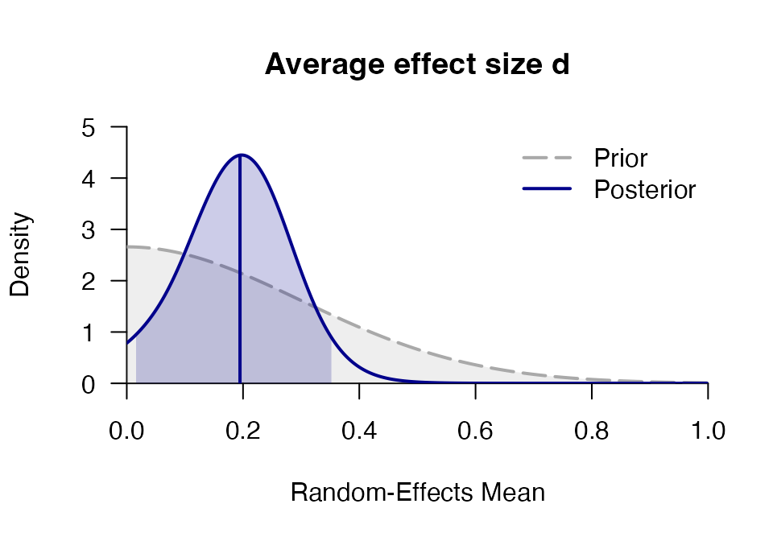
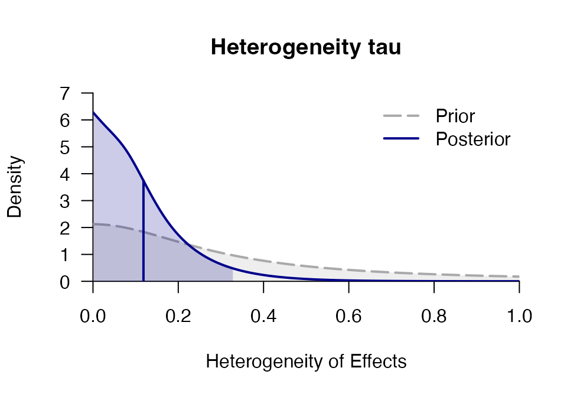
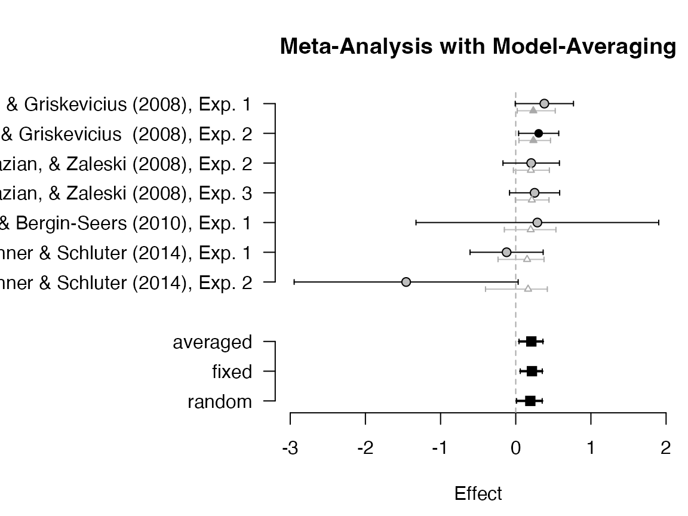

vignettes/metaBMA.Rmd
metaBMA.RmdFixed-effects meta-analyses assume that the effect size \(d\) is identical in all studies. In contrast, random-effects meta-analyses assume that effects vary according to a normal distribution with mean \(d\) and standard deviation \(\tau\). Both models can be compared in a Bayesian framework by assuming specific prior distribution for \(d\) and \(\tau\). Given the posterior model probabilities, the evidence for or against an effect (i.e., whether \(d = 0\)) and the evidence for or against random effects can be evaluated (i.e., whether \(\tau = 0\)). By using Bayesian model averaging (i.e., inclusion Bayes factors), both types of tests can be performed by marginalizing over the other question. Most importantly, this allows to test whether an effect exists while accounting for uncertainty whether study heterogeneity exists or not.
To fit a meta-analysis model, prior distributions on the average
effect \(d\) and the heterogeneity
\(\tau\) are required. The package
metaBMA leaves the user the freedom to choose from several
predefined distributions or even define an owen prior density function.
The function prior facilitates the construction and visual
inspection of prior distributions to check whether they meet the prior
knowledge about the field of interest.
## Loading required package: Rcpp## This is metaBMA version 0.6.8## - Default priors were changed in version 0.6.6.## - Since default priors may change again, it is safest to specify priors (even when using the defaults).
# load data set
data(towels)
# Half-normal (truncated to > 0)
p1 <- prior("norm", c(mean=0, sd=.3), lower = 0)
p1## Prior density function (class='prior'): 'norm' (mean=0, sd=0.3) truncated to the interval [0,Inf].
p1(1:3)## [1] 1.028186e-02 5.940600e-10 5.129732e-22
plot(p1)
# custom prior
p1 <- prior("custom", function(x) x^3-2*x+3, lower = 0, upper = 1)
plot(p1, -.5, 1.5)
The functions meta_fixed() and
meta_random() fit Bayesian meta-analysis models. The
model-specific posteriors for \(d\) can
then be averaged by bma() and inclusion Bayes factors be
computed by inclusion().
The fixed-effects meta-analysis assumes that the effect size is identical across studies. This model requires only one prior distribution for the overall effect \(d\):
# Fixed-effects
progres <- capture.output( # suppress Stan progress for vignette
mf <- meta_fixed(logOR, SE, study, towels,
d = prior("norm", c(mean=0, sd=.3), lower=0))
)
mf## ### Bayesian Fixed-Effects Meta-Analysis ###
## Prior on d: 'norm' (mean=0, sd=0.3) truncated to the interval [0,Inf].
##
## # Bayes factors:
## (denominator)
## (numerator) fixed_H0 fixed_H1
## fixed_H0 1.0 0.0419
## fixed_H1 23.9 1.0000
##
## # Posterior summary statistics of fixed-effects model:
## mean sd 2.5% 50% 97.5% hpd95_lower hpd95_upper n_eff Rhat
## d 0.212 0.075 0.066 0.212 0.361 0.062 0.358 NA NA
# plot posterior distribution
plot_posterior(mf)In contrast, the random-effects meta-analysis assumes that the effect size varies across studies. Specifically, it is assumed that study effect sizes follow a normal distribution with mean \(d\) and standard deviation \(\tau\). This model requires two prior distributions for both parameters:
# Random-effects
progres <- capture.output( # suppress Stan progress for vignette
mr <- meta_random(logOR, SE, study, towels,
d = prior("norm", c(mean=0, sd=.3), lower=0),
tau = prior("t", c(location=0, scale=.3, nu=1), lower=0),
iter = 1500, logml_iter = 2000, rel.tol = .1)
)
mr ## ### Bayesian Random-Effects Meta-Analysis ###
## Prior on d: 'norm' (mean=0, sd=0.3) truncated to the interval [0,Inf].
## Prior on tau: 't' (location=0, scale=0.3, nu=1) truncated to the interval [0,Inf].
##
## # Bayes factors:
## (denominator)
## (numerator) random_H0 random_H1
## random_H0 1.00 0.264
## random_H1 3.78 1.000
##
## # Posterior summary statistics of random-effects model:
## mean sd 2.5% 50% 97.5% hpd95_lower hpd95_upper n_eff Rhat
## d 0.198 0.086 0.033 0.199 0.367 0.023 0.355 2029.1 1.002
## tau 0.120 0.113 0.004 0.093 0.393 0.000 0.327 1489.2 1.000
# plot posterior distribution
plot_posterior(mr, main = "Average effect size d")
plot_posterior(mr, "tau", main = "Heterogeneity tau")
The most general functions in metaBMA are
meta_bma() and meta_default(), which fit
random- and fixed-effects models, compute the inclusion Bayes factor for
the presence of an effect and the averaged posterior distribution of the
mean effect \(d\) (which accounts for
uncertainty regarding study heterogeneity).
mb <- meta_bma(logOR, SE, study, towels,
d = prior("norm", c(mean=0, sd=.3), lower=0),
tau = prior("t", c(location=0, scale=.3, nu=1), lower=0),
iter = 1500, logml_iter = 2000, rel.tol = .1)
mb## ### Meta-Analysis with Bayesian Model Averaging ###
## Fixed H0: d = 0
## Fixed H1: d ~ 'norm' (mean=0, sd=0.3) truncated to the interval [0,Inf].
## Random H0: d = 0,
## tau ~ 't' (location=0, scale=0.3, nu=1) truncated to the interval [0,Inf].
## Random H1: d ~ 'norm' (mean=0, sd=0.3) truncated to the interval [0,Inf].
## tau ~ 't' (location=0, scale=0.3, nu=1) truncated to the interval [0,Inf].
##
## # Bayes factors:
## (denominator)
## (numerator) fixed_H0 fixed_H1 random_H0 random_H1
## fixed_H0 1.00 0.0419 0.433 0.114
## fixed_H1 23.87 1.0000 10.330 2.730
## random_H0 2.31 0.0968 1.000 0.264
## random_H1 8.74 0.3663 3.784 1.000
##
## # Bayesian Model Averaging
## Comparison: (fixed_H1 & random_H1) vs. (fixed_H0 & random_H0)
## Inclusion Bayes factor: 9.851
## Inclusion posterior probability: 0.908
##
## # Model posterior probabilities:
## prior posterior logml
## fixed_H0 0.25 0.0278 -5.58
## fixed_H1 0.25 0.6644 -2.40
## random_H0 0.25 0.0643 -4.74
## random_H1 0.25 0.2434 -3.41
##
## # Posterior summary statistics of average effect size:
## mean sd 2.5% 50% 97.5% hpd95_lower hpd95_upper n_eff Rhat
## averaged 0.207 0.080 0.045 0.208 0.362 0.042 0.359 NA NA
## fixed 0.211 0.074 0.073 0.208 0.363 0.071 0.357 764.2 1.005
## random 0.191 0.090 0.018 0.193 0.369 0.002 0.339 1390.4 1.001
plot_posterior(mb, "d", -.1, 1.4)
plot_forest(mb)
Often, it is of interest to judge how much additional evidence future
studies can contribute to the present knowledge. Conditional on the
outcome of the model averaging for meta-analysis, the function
predicted_bf() samples new data sets from the posterior and
performs model selection for each replication. Thereby, a distribution
of predicted Bayes factors is obtain that represents the expected
evidence one expects when running a new study. The following example is
not executed since it requires time-intensive computations:
mp <- predicted_bf(mb, SE = .2, sample = 30)
plot(mp)